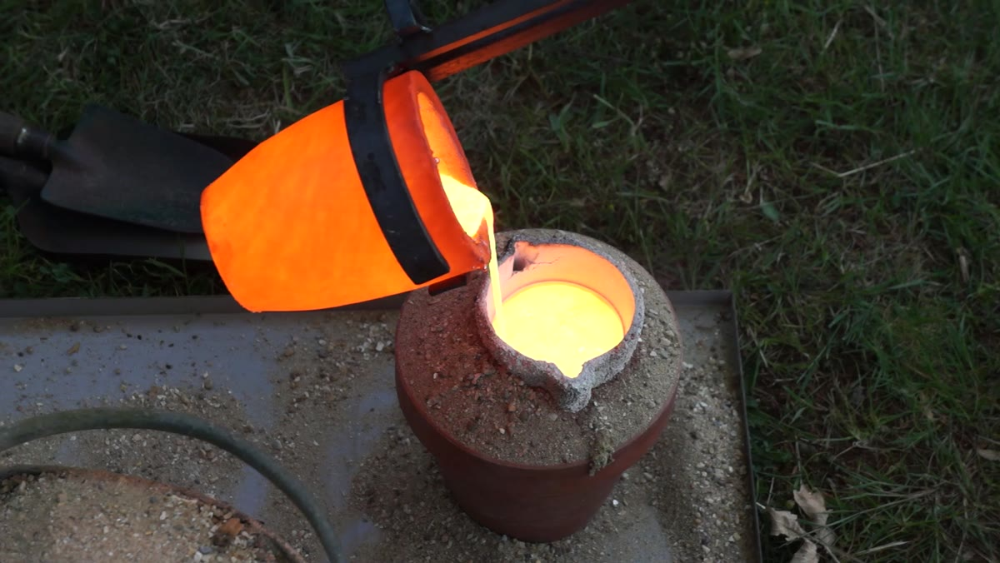

How a work comes to be
From line to form
“I normally work from one piece to the next, not following any set direction or expectation. The work falls out of the process of response, exploration and experimentation.”Michael Joseph
01
A line
It starts with drawing from life, in charcoal, quickly. Michael calls it practising scales: the figure is a framework for looking, not a likeness to be copied.
Shiver — study I02
Edit and simplify
Each drawing answers the one before. Detail is edited away until only what matters is left: a gesture, a tension, the space around the body.
Shiver — study II03
Into three dimensions
The line leaves the paper. Bent in wire, the drawing becomes a maquette, a small model to walk around and test from every side.
Shiver — maquette04
Out into the world
Scaled up in steel and set in the landscape, the figure is still only a line. Sky and field fill the space it encloses, and it changes with the light.
Shiver05
Steel at scale
The same thinking carries to monumental work. Tryst is over three metres of Corten and welded steel, cut and built by hand in the studio.
Tryst
06
Fire
And some pieces go through fire. Michael casts his own bronze in his own foundry: wax burned out, the mould fired red-hot, the metal poured by hand.
07
Bronze
What emerges from the ceramic shell is cleaned, chased and patinated by hand. Every step from the first line to the final surface is Michael's own.
Suzanne